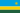
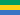
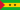
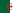

Afrique
|
||||||||||||||||
D’une superficie de 30 221 532 km2 en incluant les îles, l’Afrique est un continent couvrant 6 % de la surface terrestre et 20,3 % de la surface des terres émergées[1]. Avec une population de plus d'1 milliard habitants (2010)[2], les Africains représentent 16,14 % de la population mondiale. Le continent est bordé par la mer Méditerranée au nord, le canal de Suez et la mer Rouge au nord-est, l’océan Indien au sud-est et l’océan Atlantique à l’ouest. L’Afrique comprend 48 pays en incluant Madagascar, et 53 en incluant tous les archipels.
L’Afrique chevauche l’équateur et englobe de nombreux climats : tempérés au nord et au sud, chauds et désertiques le long des tropiques, chauds et humides sur l'équateur. En raison du manque de précipitations régulières et d’irrigation, tout comme de glaciers ou de systèmes montagneux aquifères, il n’y existe pas de moyen de régulation naturel du climat à l’exception des côtes.
Sommaire[masquer]
|
Étymologie[modifier]
L'étymologie de ce nom a fait l'objet de nombreuses hypothèses.
Selon la plus probable, due à Michèle Fruyt (Revue de Philologie 50, 1976: 221-238), Africa est lié à autre terme latin africus (ventus) désignant en Campanie, le « vent pluvieux » en provenance de la région de Carthage, puisqu'à l'origine, les Romains nommaient uniquement « Afrique » cette partie nord du continent.
Les étymologies antérieures au 20e siècle ne sont plus aujourd'hui que des curiosités historiques : Isidore de Séville tirait ce nom du latin aprica (« ensoleillée »); Léon l'Africain invoquait un mot grec fictif a-phrike (« sans froid »).
Selon d'autres chercheurs, le mot Afrique provient de la tribu des Banou Ifren (tribu Amazigh)[3],[4],[5],[6], dont l'ancêtre est Ifren appelée aussi Iforen ou Ifuraces ou Afer[7] (terme signifiant également « grotte » ou « caverne » en langue berbère selon Ibn Khaldoun[8] [4]). Ifri, la forme au singulier du mot Ifren désigne également une divinité amazigh[9],[10],[11]. D'autres chercheurs désignent les Banou Ifren comme étant les habitants de l'ancienne Ifriquia et que le nom d'Afrique découle de la nomination de la tribu des Banou Ifren[12],[13].
De plus, les Banou Ifren seraient les Ifuraces, tribu qui rassemble les Afar. Les Ifuraces habitaient l'ancienne tripolitaine et sont des Zénètes Berbères, que Corripus a désigné dans son livre de Johanide par Ifuraces[14],[15].
Selon d'autres hypothèses arbitraires, le mot « Afrique » pourrait provenir du nom "Afridi", une tribu qui vivait en Afrique du Nord près de Carthage[réf. nécessaire], ou encore du berbère Taferka « terre », « propriété terrienne ».
Le nom latin Africa a donné en arabe إفريقيا ifrīqīyā, qui désignait jadis l'actuelle Tunisie.
Histoire[modifier]
Antiquité africaine[modifier]
Voir également :
- Égypte antique,
- Royaume de Koush,
- Meroe,
- Pays de Pount,
- ville de Djenné-Djenno,
- Royaume de D'mt,
- Royaume d'Aksoum.
- Civilisation Nok
- Carthage
- Numidie
- Afrique romaine
Afrique impériale[modifier]
En Afrique de l’ouest, depuis le VIe siècle au début du millénaire suivant, la grande activité commerciale et les terres fertiles y ont favorisé l’émergence de royaumes et d’empires puissants tels que la civilisation Nok, l’empire du Mali, l’Oba du Benin, le royaume du Kanem-Bornou, le Dahomey, le royaume d'Oyo, l’empire Ashanti, l'empire du Ghana, l’empire Songhai et l'empire Djolof, Empire Kongo, Empire peul du Macina, Royaume bambara de Segou, Empire Monomotapa.
La création de l'empire du Mali, appelé aussi Mandé ou Manden, est sans doute l'un des plus grands évènements de l'histoire de l'Afrique. Il eut lieu en 1235, lorsque Sundjata Keita ou Soundiata Keïta gagna avec son armée la bataille de Kirina. Sundjata devint alors roi des rois ou empereur, et est considéré comme l'un des plus grands héros de toute l'Afrique, bien que la transmission orale de son histoire ait sans doute contribué à lui donner les caractéristiques d'un héros de conte. Il dota son empire d'une constitution, la charte de Kurukan Fuga ou charte du Manden, en 1236, qui s'apparente en certains points à une déclaration des droits de l'homme. Cette charte, transmise oralement de génération en génération, affirme notamment le droit à la vie, la préservation de l'intégrité physique, la tolérance, le respect des sages et marabouts, le principe d'éducation des enfants par tous, d'association des femmes à la politique, le bon traitement des esclaves... Il est même fait mention d'une suppression de l'esclavage, mais celui-ci a continué dans les faits. La charte donne également des règles économiques, et concernant la guerre[16],[17].
À l'est, le royaume éthiopien donne suite au royaume d'Axoum qui développe ses relations commerciales entre l'Afrique, le Moyen-Orient et l'Inde[18].
Enfin en Afrique australe, occupée initialement par les peuples Khoïsan puis Bantous, le Grand Zimbabwe, centre de l'Empire Monomotapa, apparaît dès le IVe siècle av. J.-C...
Des fédérations plus lâches de cités-États telles que les Yoruba et les Haoussa virent également le jour, mais la plupart de ses royaumes virent leur puissance tomber avec l'installation de ports européens en Guinée[19].
L'islamisation[modifier]
À partir du VIIe siècle, les armées Arabes envahirent et convertirent l'Afrique du Nord à l'islam. Le commerce caravanier et l'expansion islamique nouèrent de nouvelles relations entre les deux Afrique. L'islamisation se fit aussi bien de manière pacifique que militaire. En Afrique, ce sont souvent les ethnies initialement islamisées, qui propageront cette religion.
La traite des Noirs[modifier]
L'Afrique Noire eut ses premiers contacts avec le monde arabe au VIIe siècle, puis avec les européens au XVe siècle. Ces derniers établirent des comptoirs adversaires de la traite orientale ; d'abord pour commercer, ensuite aussi pour la traite des Noirs à l'origine de la diaspora africaine.
L'Afrique du Nord en s'islamisant, est passée de la civilisation islamique à l'ottomane, sauf le Maroc qui a pu stopper l'avancée ottomane au fleuve de la Moulouya (près d'Oujda) lors du règne des Saadiens sur le pays.
La colonisation[modifier]
Au XIXe siècle, après l'abolition de l'esclavage, les États européens se sont installés en Afrique du Nord et en Afrique subsaharienne grâce à leur avance technologique et malgré la résistance des peuples africains. Les puissances coloniales se partagent l'Afrique lors de la conférence de Berlin en 1884-1885[20]. L'exploitation des ressources naturelles et humaines africaines continua sous administration européenne jusqu'au XXe siècle. Deux pays échapperont néanmoins au partage de l'Afrique :
- le Liberia, créé par une société de colonisation américaine en 1822 et ayant proclamé son indépendance le 26 juillet 1847[21];
- l'Éthiopie, État souverain depuis l'antiquité, elle parvient à repousser la tentative de colonisation des Italiens auxquels elle inflige une défaite à la bataille d'Adoua, le 1er mars 1896. Il s'agit de la première victoire décisive d'un pays africain sur les colonialistes[22].
La quête de l'autonomie politique et les indépendances[modifier]
Les aspirations nationalistes africaines menèrent aux indépendances qui s'étalèrent de 1910 à 1975 suivant les pays. L'Afrique fut jusqu'aux années 1990 instrumentalisée par les puissances de la guerre froide.
Afrique contemporaine[modifier]

Conflits[modifier]
De nombreux conflits sont présents en Afrique :
- conflits dits "ethniques" dont les causes de certains sont attribuées au tracé des frontières ne tenant que très peu compte de l'histoire et de l'organisation sociétale des diverses composantes culturelles du continent africain;
- conflits dits "politiques" du fait de gouvernements irresponsables faisant passer les intérêts des dirigeants avant ceux des populations locales en dépit de leur pauvreté ;
- conflits dits "sociaux politiques" dus à cette extrême pauvreté;
- des guerres civiles aux enjeux internationaux éclatent pour le contrôle des matières premières dont la commercialisation n'enrichit que rarement les populations locales.
L'Afrique est le continent le plus ravagé par les conflits. Selon l’Atlas stratégique 2008, sur 35 conflits graves répertoriés dans le monde, 13 sont situés en Afrique, où 15 pays sur 53 sont concernés par une « crise d’intensité moyenne à haute ». Le premier fournisseur d'armement en valeur à l'ensemble du continent étant entre 1998 et 2005 la France[23].
Par un cercle vicieux, ces conflits entraînent la pauvreté puis des conflits sociaux, ce qui favorise l'éclatement d'autres conflits.
Dans un souci de préserver la paix sur le continent, l'Organisation de l'unité africaine a été créée en 1963[24], puis remplacée en 2002 par l'Union africaine[25]. En 2008, sur 88 000 casques bleus de l’ONU déployés dans le monde, 61 000 sont engagés en Afrique dans huit conflits ouverts ou larvés. Pour les Nations unies, la facture militaire africaine atteint 5,5 milliards de dollars sur un total mondial de 7,2 milliards.
Génocide rwandais[modifier]
En 1994, le gouvernement à Kigali encourage le massacre systématique de la minorité Tutsi. En deux mois, les milices hutu tuent près d'un million de personnes.
Guerre civile au Darfour[modifier]
Il se déroule actuellement au Darfour une guerre civile pour obtenir le contrôle de certaines ressources (eau, terres...) et un nettoyage ethnique. On dénombre déjà plus de 300 000 morts[26].
Crise politico-militaire en Côte d'Ivoire[modifier]
En Côte d'Ivoire se disputent les forces de l'État ivoirien et des forces rebelles pour obtenir des changements politiques, cette crise a duré 5 ans (2002-2007).
Guerres en Algérie[modifier]
La guerre d'Algérie se déroule de 1954 à 1962 et débouche sur l'indépendance de l'Algérie, colonie française de 1830 à 1848, puis partie intégrante du territoire de la République et considerée comme département français. Dans les années 1990, une violente guerre civile oppose le gouvernement à l'opposition islamique. Actuellement, le terrorisme résiduel qui existe encore en Algérie n'a plus rien à avoir avec celui des années 1990, une mutation s'est faite et l'Algérie a affaire maintenant à un terrorisme globalisé comme al-Qaida au pays du Maghreb islamique.
Le néocolonialisme[modifier]
Cela désigne l'attitude politique, impérieuse, d'un pays face à une de ses anciennes colonies.
Articles détaillés par pays[modifier]
Géographie[modifier]
Avec une superficie de 30 millions de km² de surface émergée, l’Afrique est le second continent le plus étendu. Séparé de l'Europe par la mer Méditerranée, il est rattaché à l'Asie à son extrémité nord-est par l'isthme de Suez (traversé par le canal de Suez) sur 163 km[27]. Depuis son extrémité nord à Ras ben Sakka (37°21' N) en Tunisie à son extrémité sud au Cap des Aiguilles (34°51'15" S) en Afrique du Sud, le continent s'étend sur environ 8 000 km, et depuis le Cap-Vert (17°33'22" W), à son extrême-ouest, à Ras Hafun (51°27'52" E) en Somalie, à l'extrême-est, sur 7 400 km[28].
Ses côtes, rectilignes, sont longues de 26 000 km, et l'absence de profondes entailles de sa rive est remarquable par le fait que l'Europe, qui s'étend sur 10 400 000 km² – soit environ un tiers de la surface de l'Afrique – dispose d'un littoral, plus long, de 32 000 km[28]. Le plus grand pays d'Afrique, par sa superficie, le dixième au monde, est le Soudan, tandis l'archipel des Seychelles, au large de la côte est de l'Afrique, en est le plus petit[29].
Climat[modifier]
L'Afrique présente une grande variété de climats, d'équatorial au centre à tempéré chaud en Afrique du Nord et en Afrique australe. Les plaines du nord sont désertiques et très chaudes en raison de la grande distance qui les sépare de l'océan. Les différences de température entre l'été et l'hiver, ainsi qu'entre le jour et la nuit, y sont les plus importantes. Plus au sud, la chaleur est atténuée par l'humidité apportée par l'océan ainsi que par l'altitude, particulièrement sur les hauts plateaux d'Afrique de l'Est. La végétation y est également plus dense. Enfin, les extrêmes nord et sud connaissent tous deux un climat tempéré, quoique plus frais et plus humide au sud.
Environnement[modifier]
En ce qui concerne l'environnement, l'Afrique est confrontée à trois phénomènes majeurs qui sont la sécheresse dans les États du Sahel et de la Corne d'Afrique (Éthiopie,Somalie,Erythrée,Kenya) occasionnant de nombreux épisodes de faim dans ces contrées, la désertification due à la surexploitation agricole ainsi qu'à la poussée démographique, enfin la déforestation causée par une agriculture extensive sur brûlis et de nombreux conflits armés notamment à l'Est de la République démocratique du Congo.
Géographie humaine[modifier]
États d'Afrique[modifier]
Il serait vain de vouloir dresser une nomenclature de tous les États existant en Afrique avant la pénétration européenne. En 1914, du fait de l'essor des empires coloniaux, le continent noir ne comptait plus que deux États souverains, l’Abyssinie (ou Éthiopie) et le Liberia, auxquels s'ajoutèrent par la suite l'Égypte (1922) et l’Union sud-africaine (1931). Depuis la seconde guerre mondiale, le nombre d'États africains indépendants n'a cessé d'augmenter, passant de 4 en 1945 à 27 en 1960, pour atteindre 53 en 1993.
Les frontières des États africains sont en grande partie issues de la colonisation, ce qui explique qu'elles ne prennent que peu en compte les réalités des populations. De même le regroupement des différents pays en sous-régions est utilisé plus dans un souci pratique que par vérité historique. On distingue généralement l’Afrique du Nord, l’Afrique noire (appelée aussi l’Afrique subsaharienne) et l'Afrique australe :
- l’Afrique du Nord, limitée au sud par le Sahara, est habitée par des populations à majorité arabe et berbère
- l'Afrique subsaharienne est elle-même subdivisée en trois sous régions : l’Afrique de l'Ouest, l’Afrique de l'Est, l’Afrique centrale
- l'Afrique australe jouit d'un climat tempéré et possède le plus fort niveau de développement économique.
|
|
États d'Afrique de l'Est[modifier]
Noms des pays et des territoires, avec drapeau |
Superficie (km²) |
Population[30] (estimation 2010) |
Densité de population (par km²) |
Capitale |
|---|---|---|---|---|
| Burundi | 27 830 | 9 863 120 | 354,4 | Bujumbura |
| Comores | 2 170 | 773 410 | 356,4 | Moroni |
| Djibouti | 23 000 | 740 530 | 32,2 | Djibouti |
| Érythrée | 121 320 | 5 792 980 | 47,7 | Asmara |
| Éthiopie | 1 127 127 | 88 013 490 | 78,1 | Addis-Abeba |
| Kenya | 582 650 | 40 046 570 | 68,7 | Nairobi |
| 587 040 | 21 281 840 | 36,3 | Antananarivo | |
| 118 480 | 15 447 500 | 130,4 | Lilongwe | |
| Maurice | 2 040 | 1 294 100 | 634,4 | Port Louis |
| Mozambique | 801 590 | 22 061 450 | 27,5 | Maputo |
|  Rwanda | 26 338 | 11 055 980 | 419,8 | Kigali |
| Seychelles | 455 | 88 340 | 194,2 | Victoria |
| Somalie | 637 657 | 10 112 450 | 15,9 | Mogadishu |
| 945 087 | 41 892 900 | 44,3 | Dodoma | |
| Ouganda | 236 040 | 33 398 680 | 141,5 | Kampala |
| Zambie | 752 614 | 13 460 310 | 17,9 | Lusaka |
| Zimbabwe | 390 580 | 11 651 860 | 29,8 | Harare |
États d'Afrique centrale[modifier]
| Noms des pays et des territoires, avec drapeau |
Superficie (km²) |
Population[31] (estimation 2010) |
Densité de population (par km²) |
Capitale |
|---|---|---|---|---|
| Angola | 1 246 700 | 13 068 160 | 10,5 | Luanda |
| Cameroun | 475 440 | 19 294 150 | 40,6 | Yaoundé |
| République centrafricaine | 622 984 | 4 844 930 | 7,8 | Bangui |
| Tchad | 1 284 000 | 10 543 460 | 8,2 | N'Djamena |
| République du Congo | 342 000 | 4 125 920 | 12,1 | Brazzaville |
| RD Congo | 2 345 410 | 70 916 440 | 30,1 | Kinshasa |
| Guinée équatoriale | 28 051 | 650 700 | 23,2 | Malabo |
|  Gabon | 267 667 | 1 545 260 | 5,8 | Libreville |
|  Sao Tomé-et-Principe | 1 001 | 175 810 | 175,6 | São Tomé |
États d'Afrique du Nord[modifier]
| Noms des pays et des territoires, avec drapeau |
Superficie (km²) |
Population[32] (estimation 2010) |
Densité de population (par km²) |
Capitale |
|---|---|---|---|---|
|  Algérie | 2 381 741 | 34 586 180 | 14,5 | Alger |
| Égypte[33] | 1 001 450 | 80 471 870 | 80,4 | Le Caire |
| Libye | 1 759 540 | 6 461 450 | 3,7 | Tripoli |
| Maroc | 446 550 (710 050 avec le Sahara occidental) | 31 627 430 | 70,8 | Rabat |
| Sahara occidental (territoire revendiqué par le Maroc) [34] | 266 000 | 491 520 | 1,8 | Laâyoune de facto |
| Soudan | 2 505 810 | 43 939 600 | 17,5 | Khartoum |
| Tunisie | 163 610 | 10 589 030 | 64,7 | Tunis |
États d'Afrique australe[modifier]
| Noms des pays et des territoires, avec drapeau |
Superficie (km²) |
Population[35] (estimation 2010) |
Densité de population (par km²) |
Capitale |
|---|---|---|---|---|
| Botswana | 600 370 | 2 029 310 | 3,4 | Gaborone |
| Lesotho | 30 355 | 1 919 550 | 63,2 | Maseru |
| Namibie | 825 418 | 2 128 470 | 2,6 | Windhoek |
| Afrique du Sud | 1 219 912 | 49 109 110 | 40,3 | Pretoria |
| Swaziland | 17 363 | 1 354 050 | 78 | Mbabane |
États d'Afrique de l'Ouest[modifier]
| Noms des pays et des territoires, avec drapeau |
Superficie (km²) |
Population[36] (estimation 2010) |
Densité de population (par km²) |
Capitale |
|---|---|---|---|---|
| Bénin | 112 620 | 9 056 010 | 80,4 | Porto-Novo |
| Burkina Faso | 274 200 | 16 241 810 | 59,2 | Ouagadougou |
| Cap-Vert | 4 033 | 508 660 | 126,1 | Praia |
| 322 460 | 21 058 800 | 65,3 | Abidjan, Yamoussoukro | |
| Gambie | 11 300 | 1 824 160 | 161,4 | Banjul |
| Ghana | 239 460 | 24 339 840 | 101,6 | Accra |
| Guinée | 245 857 | 10 324 030 | 42 | Conakry |
| Guinée-Bissau | 36 120 | 1 565 130 | 43,3 | Bissau |
| 111 370 | 3 685 080 | 33,1 | Monrovia | |
| Mali | 1 240 000 | 13 796 350 | 11,1 | Bamako |
| Mauritanie | 1 030 700 | 3 205 060 | 3,1 | Nouakchott |
| Niger | 1 267 000 | 15 878 270 | 12,5 | Niamey |
| Nigeria | 923 768 | 152 217 340 | 164,8 | Abuja |
| Sénégal | 196 190 | 12 323 250 | 62,8 | Dakar |
| Sierra Leone | 71 740 | 5 245 700 | 73,1 | Freetown |
| Togo | 56 785 | 6 587 240 | 116 | Lomé |
Dépendances européennes en Afrique[modifier]
| Noms des pays et des territoires, avec drapeau |
Superficie (km²) |
Population |
Densité de population (par km²) |
Capitale |
|---|---|---|---|---|
| Îles Canaries (Espagne) | 7 492 | 2 118 520 | 282,8 | Las Palmas de Gran Canaria, Santa Cruz de Tenerife |
| Ceuta (Espagne) | 20 | 80 570 | 4 028, 5 | — |
| Îles Éparses (France) | 44 | 0 | 0 | Saint-Denis |
| Madère (Portugal) | 797 | 247 400 | 310,4 | Funchal |
| 374 | 186 450 | 498,5 | Mamoudzou | |
| Melilla (Espagne) | 12 | 73 460 | 6 121, 7 | |
| 2 512 | 802 000 | 319,3 | Saint-Denis | |
| Sainte-Hélène, Ascension et Tristan da Cunha (R.U) | 410 | 7 670 | 18,7 | Jamestown |
Évolution de la population[modifier]
L'Afrique est le continent dont la population en pourcentage a le plus augmenté depuis le début du XXe siècle et dont le taux d'accroissement naturel, avec 2,8 % en 2008 est le plus élevé[37] . Estimée à 133 millions d'habitants en 1900 soit 8,1 % de la population mondiale, elle est à passé en 1950 à 221 millions soit 8,8 % de la population puis à 767 millions en 1999 soit 12,8 % de la population et pourrait être de 1 766 millions en 2050 soit 19,8 % de la population [38].
Natalité et mortalité[modifier]
Si la majeure partie des pays africains ont un taux de natalité élevé, ils font également face à un taux de mortalité extrêmement fort, y compris une mortalité infantile. 10 pays africains avaient en 2008 un taux de mortalité infantile supérieur à 100 ‰ (soit 10%), 30 un taux supérieur à 50 ‰ (soit 5%)[39]. Les 5 pays ayant l'espérance de vie la plus faible (de 32 à 41 ans) en 2008 étaient tous africains[40].
Le Sida est devenu la première cause de mortalité en Afrique à la fin du XXe siècle[41]. C'était encore le cas en 2007, où ONUSIDA estimait à 22 million le nombre de personnes infectées en Afrique[42]. La malnutrition (carence en vitamines ou calorique), la famine, le manque d'eau ou la mauvaise qualité de l'eau, les épidémies sont autant d'autres causes importantes.
Cultures et religions[modifier]
Culture traditionnelle[modifier]
La culture africaine n'est pas un bloc monolithique, il existe plusieurs cultures africaines. La culture africaine subsaharienne traditionnelle est basée sur la transmission orale, souvent accompagnée de musique. Le griot, messager et chanteur de la communauté, chargé de conserver la mémoire et la tradition du peuple, fut longtemps la clé de voûte de la société africaine. Ses paroles étaient souvent accompagnées d'instruments, et il était chargé de gérer les conflits dans la communauté[43].
Culture contemporaine[modifier]
Depuis l'époque dite "des indépendances" les intellectuels et artistes africains se sont engagés dans une large réflexion autour de l'identité et de la modernité. L'équation entre authenticité et modernité se résout différemment selon les directions choisies. Il y a eu bien sûr le mouvement de Négritude, fondé entre autres par Léopold Sédar Senghor et Aimé Césaire, axé sur la négation de l'assimilationnisme colonial et l'union des cultures noires à travers le monde. Ce mouvement à trouvé son expression dans le Festival mondial des Arts Nègres organisé par le président sénégalais Léopold Sédar Senghor en 1964. Il fut suivi en 1969 par le Festival Panafricain d’Alger qui proposa une nouvelle vision de la culture africaine, tentant de dépasser les conceptions raciales ou ethnocentristes au profit d’une culture africaine unie sous le signe de la révolution ou rejet du néocolonialisme.
Aujourd’hui, malgré les difficultés politiques ou économiques qui forcent certains d’entre-eux à émigrer en Europe ou aux États-Unis, beaucoup d’artistes et de penseurs africains ont acquis une renommée internationale. On citera par exemple Fela Anikulapo Kuti, Dele Sosimi, Manu Dibango,Lokua Kanza,Papa Wemba,Werra Son,Alpha Blondy,King Kester Emeneya Youssou N’Dour, Cesaria Evora, Cheb Khaled, Ali Farka Touré, Toumani Diabaté ou encore Tinariwen dans le domaine de la musique ; mais aussi quatre prix Nobel de littérature avec John Maxwell Coetzee, Nadine Gordimer, Naguib Mahfouz et Wole Soyinka ; pour les plasticiens Eric Adjetey Anang et l'atelier Kane Kwei au Ghana, Frédéric Bruly Bouabré en Côte d'Ivoire ou Ousmane Sow au Sénégal; pour le cinéma Ousmane Sembène, Youssef Chahine (grand prix du jury au festival de berlin) ou Mohammed Lakhdar-Hamina (palme d’or à Cannes)...
Littérature[modifier]
Cinéma[modifier]
Vu la faible quantité de la production, il est souvent considéré comme un ensemble, même s'il existe bien évidemment une multitude de "cinémas africains". Il faut également noter que pendant longtemps il s'est agi d'un cinéma de l'extérieur puisque les conditions économiques étant rarement réunies pour qu'une vraie industrie puisse exister, beaucoup de réalisateurs étaient des expatriés, en France, en Belgique ou ailleurs. Ces dernières années, avec la démocratisation de la vidéo (et donc des tournages plus légers et économiques), on assiste dans un certain nombre de pays à l'émergence de cinéastes de l'intérieur.
C'est notamment le cas au Nigéria. Le cinéma nigérian est considéré comme le troisième mondial selon la quantité de films produits selon The Sunday Telegraph[44]. Les films produits par l'industrie cinématographique nationale (connue sous le nom de Nollywood) sont tournés en quinze jours et coûtent en moyenne 11 000 euros. En l'absence d'un réseau de salle de cinéma, les films sont ensuite distribués directement en vidéo (3 euros le DVD).
Parallèlement à cette production ciblant les spectateurs de leurs pays, certains réalisateurs africains sont plus connus (et reconnus) à l'international. On citera notamment le Mauritanien Abderrahmane Sissako, les Maliens Souleymane Cissé et Cheick Oumar Sissoko, le Burkinabé Idrissa Ouedraogo et le Sénégalais Ousmane Sembène.
Tout en rendant hommage à Sembène décédé au cours de l'année, la vingtième édition du FESPACO, qui s'est tenu en février-mars 2007 à Ouagadougou, témoigne[45] cependant de la montée d'une nouvelle génération de cinéastes, à laquelle se rattachent notamment les trois lauréats du festival, le Nigerian Newton Aduaka pour Ezra, le Camerounais Jean-Pierre Bekolo avec Les Saignantes et le Tchadien Mahamat-Saleh Haroun, réalisateur de Daratt. Les protagonistes des films récents sont souvent des adolescents ou de jeunes adultes, ce qui correspond à la moyenne d'âge du continent africain. La guerre, la violence et leurs conséquences font partie des thèmes fréquemment abordés, de même que l'immigration et la diaspora.
Langues[modifier]
Les linguistes recensent environ 2 000 langues vivantes sur le continent africain (soit environ le tiers des langues du monde), regroupées en quatre grandes familles, exclusion faite des langues de souche non africaine.
La famille afro-asiatique (ou chamito-sémitique, composée de 353 langues vivantes dont 299 parlées en Afrique, totalisant 340 millions de locuteurs) n’est pas exclusivement africaine. Elle s’étend également sur la péninsule Arabique et ne couvre que la partie nord de l’Afrique de l'Ouest. Elle inclut notamment le Berbere, la langue originelle des habitants de l'afrique du nord, ainsi que l’arabe qui est la première langue d'afrique en nombre de locuteurs.
La famille nilo-saharienne (197 langues vivantes et 35 millions de locuteurs) couvre une partie du Sahara, le haut bassin du Nil et certains hauts plateaux de l’Afrique orientale. Elle est composée de douze groupes de langues dont seulement deux sont localisés en Afrique de l'Ouest : le songhai (Mali, Niger, Burkina, Bénin) et le Kanuri (Niger, Nigeria, Cameroun et Tchad autour du lac du même nom).
La famille khoisan (22 langues vivantes et 360 000 locuteurs) est la plus petite famille linguistique africaine. Elle est centrée sur la Namibie et rayonne sur l’Angola, le Botswana et l’Afrique du Sud. « Dans le passé, les langues khoisan étaient parlées dans la majeure partie de l’Afrique australe et orientale. Elles ont été progressivement évincées de maints endroits par les langues bantou (puis) européennes ».
La famille Niger Congo compte près de 1 500 langues vivantes, ce qui fait d’elle la plus grande famille linguistique du monde (22 % des langues de la planète et 71 % des langues africaines). Elle couvre la plus grande partie du territoire ouest-africain et concerne l’immense majorité de la population de la région. Elle compte en son sein un groupe - le bantou – qui couvre à lui seul la quasi-totalité de l’Afrique sub-équatoriale à l’exception de l’aire khoisan.On retoruve dans cette famille la langue swahili (parfois appelé kiswahili)
Beaucoup de spécialistes estiment que le foyer originel des Bantou se situe au sud de la Bénoué (à la frontière du Cameroun et du Nigeria). Il y a de cela 4 000 ans, les Bantou entament une longue migration vers l’Afrique centrale, sans doute poussés par l’aridification du climat et le développement de l’agriculture et de l’élevage qu’ils rejettent. Cette colonisation prend près de trois millénaires. Les Bantou n’atteignent le Sud du continent qu’aux XVIe siècle, XVIIe siècle fuyant les Massaï venus de la haute vallée du Nil. Les nombreuses similitudes entre les langues bantou ainsi que leur remarquable extension géographique en font une zone linguistique spécifique très souvent distinguée du reste de la famille nigéro-congolaise.
autre Familles linguistiques présentes sur le continent :
- Langues austronésiennes ;avec notamment le malgache
- Langues indo-européennes.avec notamment le français, le portugais, l'anglais et l'Afrikaans
Le français joue actuellement un rôle important en Afrique, servant de plus en plus de langue véhiculaire voire de langue maternelle (au Gabon, Côte d'Ivoire, Congo, Cameroun et Bénin notamment) dans un grand nombre de pays, et son utilisation s'intensifie.
Entre 1992 et 2002, le nombre d'apprenants du et en français en Afrique Subsaharienne et Océan Indien a augmenté de 60,37%, passant de 22,337 millions à 34,563 millions de personnes. On peut observer une tendance similaire au Maghreb. Cependant, les chiffres fournis par l'OIF pour le Maghreb ont été réunis avec ceux du Moyen-Orient, le décompte exact pour les pays du Maghreb n'est donc pas possible mais on observe une augmentation de 10,47 millions à 18 millions d'apprenants pour cet ensemble, quand bien même le français n'est pas langue officielle (Algérie). Il faut aussi considérer le nombre de locuteurs du français dans chaque pays pour se faire une idée de l'importance que joue le français en Afrique. D'ores et déjà, il y a plus de francophones en Afrique qu'en Europe[46].
L'Académie africaine des langues a été créée en 2001 afin de gérer ce patrimoine linguistique[47].
Religions[modifier]
Historiquement, les religions tribales africaines dominaient les régions d'Afrique de l'Est, Afrique centrale, Afrique australe, et la région côtière d'Afrique de l'Ouest.
L'animisme a moins de pratiquants aujourd'hui qu'avant l'arrivée des Européens, mais il reste important dans certains pays, notamment le Bénin et le Togo. Il y a beaucoup d'Africains qui incorporent quelques éléments d'animisme dans leur foi chrétienne ou musulmane.
L'Afrique est très marquée par l'arrivée de l'Islam qui s'est installé en Afrique du Nord (la Grande Mosquée de Kairouan en Tunisie est la plus ancienne mosquée en Afrique du Nord[48] ; fondée en 670 par le général arabe Oqba Ibn Nafi, elle date dans son état actuel du IXe siècle[49]), et plus tard dans l'intérieur de Afrique de l'Ouest et la côte d'Afrique de l'Est.
Un christianisme orthodoxe existe en Éthiopie, Érythrée et Égypte depuis l'antiquité tardive. L'Éthiopie étant la seconde plus ancienne nation chrétienne au monde après l'Arménie, faisant remonter cette tradition depuis 330. Dans le reste de l'Afrique, le christianisme est représenté via ses traditions catholiques et protestantes établies par des missionnaires européens pendant l'époque coloniale.
Sports[modifier]
Beaucoup de sportifs de niveau international sont d'origine africaine : des footballeurs, tels que George Weah (ballon d'or France Football 1995),Samuel Eto'o triple vainqueur de la ligue des champions, Salif Keita,Sana Cassamà, Noureddine Naybet, Roger Milla, El hadji Diouf du Sénégal Didier Drogba,Emmanuel Adebayor et Michael Essien Abedi Pele ,shabani Nonda ;Tresor Lualua ont tous évolué ou évoluent dans l'élite du football international. Kenenisa Bekele, et ont quant à eux brillé en athlétisme. Le football et l'athlétisme sont les sports les plus répandus. Les pays qui sont d'ancienne colonies britanniques pratiquent également le cricket ; quant au rugby, il est surtout pratiqué en Afrique du Sud. La coupe du monde de football de 2010 s'est tenue en Afrique du Sud, devenant ainsi le premier pays africain à organiser cette manifestation mondiale.
Économie[modifier]
L'exploitation des matières premières est de loin la première exportation de l'Afrique mais la part de l'Afrique dans les exportations mondiales a chuté de 4,5% en 1990 à 1,1% en 2008 et celle des investissements étrangers directs de 5,8% en 1990 à 1% en 2008, selon un communiqué de la FAO[50].
La dette africaine[modifier]
La dette constitue une part essentielle du budget de l'économie de la majeure partie des pays africains. Le service de la dette constitue par exemple sur les années 1992-1997, 35% du budget du Cameroun et de la Côté d’Ivoire, 40% de celui du Kenya et du Zambie, 46% de celui de la Tanzanie (dans le même temps la part des services sociaux constitue moins de 15% du budget, 4% au Cameroun)[51]. Une partie essentielle de cette dette extérieure est constituée de la dette dite multilatérale, c’est-à-dire envers les institutions financières internationales où la représentation de ces pays n’a pratiquement aucun poids.
Selon le Comité pour l'annulation de la dette du tiers monde, la dette « est la conséquence de choix géopolitiques bien précis. Surtout elle est un puissant mécanisme de subordination des pays du Sud »[52]
On peut distinguer trois grandes phases dans le développement de cette dette :
- Tout d’abord dans les années 1960-70, « la Banque mondiale incite les pays du Sud à emprunter dans l’espoir affiché de financer la modernisation de leur appareil d’exportation et les connecter au marché mondial. l’endettement est encore supportable pour les pays du Sud car ces prêts leur permettent malgré tout de produire davantage, donc d’exporter plus et de récupérer des devises pour les remboursements et de nouveaux investissements. »
- À la fin de l’année 1979, les États-Unis amorcent un virage libéral, Paul Volcker, le directeur de la Réserve fédérale américaine, décide une forte augmentation des taux d’intérêt américains dans le but d’attirer les capitaux. De l’ordre de 4-5 % dans les années 1970, ils passent à 16-18 % au moins, voire davantage au plus fort de la crise, car la prime de risque devient énorme. Par conséquent, le Sud doit rembourser trois fois plus d’intérêts. C’est la crise de la dette.
- Dès qu’un pays est contraint de stopper ses remboursements, le Fonds monétaire international (FMI) accepte de prêter l’argent nécessaire au taux fort à condition que le pays concerné accepte de mener la politique décidée par ses experts : la politique économique de l’État endetté passe sous contrôle du FMI. Les mesures préconisées sont inscrites dans un Plan d'ajustement structurel (PAS), qui correspond au même schéma libéral : abandon des subventions aux produits et services de première nécessité : pain, riz, lait, sucre, combustible... ; austérité budgétaire et réduction des dépenses, en général baisse drastique des budgets sociaux « non-productifs » (santé, éducation, subventions aux produits de base) ; dévaluation de la monnaie locale ; taux d’intérêt élevés, pour attirer les capitaux étrangers avec une rémunération élevée ; production agricole tout entière tournée vers l’exportation (café, coton, cacao, arachide, thé etc.) pour faire rentrer des devises, donc réduction des cultures vivrières et déforestation pour gagner de nouvelles surfaces ; ouverture totale des marchés par la suppression des barrières douanières ; libéralisation de l’économie, notamment abandon du contrôle des mouvements de capitaux et la suppression du contrôle des changes ; fiscalité aggravant encore les inégalités avec le principe d’une taxe sur la valeur ajoutée (TVA) et la préservation des revenus du capital ; privatisations massives des entreprises publiques, donc un désengagement de l’État des secteurs de production concurrentiels.
Selon les chiffres du CADTM en 2009, le bilan des flux financiers montrent que, suite à la crise de la dette, les pays en voie de développements ont remboursé jusqu’en 2009 l’équivalent de 102 fois ce qu’ils devaient en 1970, dans le même temps leur dette a été multiplié par 48.
Le remboursement de la dette extérieure entre 1986 et 2007 correspond ainsi à l’équivalent de 7.5 plans Marshall injectés vers les pays du Nord[53]. Ainsi selon le CADTM, « par l'intermédiaire de la dette, le transfert des richesses des peuples du Sud vers les classes dominantes du Nord avec la complicité de celles du Sud est à l'oeuvre sous nos yeux. »[53]
La dette extérieure publique de l’Afrique se chiffre à 130 milliards de dollars en 2009[51].
Le 10 juin 2009, deux collectifs d’associations françaises et belges réclament dans un rapport sur les « fonds vautours » la mise en place d’un véritable tribunal international de la dette. Ces associations soulignent que ces fonds spéculatifs «rachètent les dettes de pays pauvres à un prix extrêmement bas en vue de les contraindre par voie judiciaire à les rembourser au prix fort, engrangent des plus values colossales sur le dos des populations du Congo, de Zambie, du Pérou, d'Argentine ou du Nicaragua»[54].
Elles pointent du doigt les responsabilités des pays riches, estimant notamment que « les justices française, anglaise ou américaine donnent systématiquement raison aux fonds vautours contre les pays pauvres » et que « l'argent que la France et les pays riches ont consacré aux allègements de dette se voit confisqué par des fonds privés au lieu de financer les dépenses sociales, comme annoncé »[55].
La place de l'Afrique dans la mondialisation des échanges[modifier]
L´Afrique est un continent totalement délaissé dans la mondialisation : sa contribution dans le commerce mondial est très faible, et en déclin permanent[56], de 8 % dans les années 1990 à 2 % aujourd'hui[57], et ses exportations sont constituées à 80 % de pétrole, des minerais et des produits agricoles[58] .
Ressources naturelles[modifier]
L'Afrique possède des gisements de minéraux (métaux), de pierres précieuses, de reserves d'or et de zinc. Les ressources (pétrole, gaz naturel, charbon) sont exploitées majoritairement par des grandes multinationales. Elles sont souvent dénoncées comme contribuant à la paupérisation des populations autochtones. Depuis quelques années, on assiste à l'exploitation de nouvelles ressources naturelles, notamment par les pays asiatiques (dont la Chine et l'Inde) ou pétroliers en manque de place : les terres agricoles sont achetées, et les surfaces concernées sont très importantes pour un continent qui subit la malnutrition et des famines régulières. Certains parlent de recolonisation de l'Afrique à ce sujet[59].
Tourisme[modifier]
Lieux et monuments célèbres :
- Pyramides d'Égypte au Caire, Louxor, Sphynx, Alexandrie Égypte.
- Désert du Sahara, Algérie,tchad, Maroc, Mauritanie, Mali, Tunisie, Libye, Égypte, Niger, Soudan.
- Chutes Victoria, Zimbabwe, Zambie.
- Mont Kilimanjaro, Tanzanie.
- Tunisie sites et monuments :
- la Grande Mosquée de Kairouan également appelée Mosquée Oqba Ibn Nafi reste encore aujourd'hui l'emblème de Kairouan et constitue le plus ancien et le plus prestigieux monument islamique de Tunisie et du Maghreb ainsi qu'un véritable joyaux architectural qui orne la ville de Kairouan elle-même étant considérée comme la quatrième ville sainte de l'islam[60] ;
- Carthage, Sidi Bou Said, la médina (avec la mosquée El Zitouna) située au cœur de la capitale Tunis ;
- le Collisé d'El Djem le plus grand de l'Empire romain après celui de Rome, Dougga (site archéologique romain inscrit au patrimoine mondial de l'humanité), le site archéologique punique de Kerkouane, les habitats Troglodytes du sud tunisien, etc.
- Maroc : Mosquée Hassan II.
- Les réserves d'animaux sauvages accessibles par des safaris : République démocratique du Congo, Kenya, Namibie, Afrique du Sud, Tanzanie.
- L'ile de Gorée, lieu de mémoire concernant l'esclavage, au Sénégal.
- Nombreux sites égyptiens en Nubie, Soudan.
- Plages sauvages de l'Archipel des Comores.
- Mali : Tombouctou, Djenné, pays dogon (région la plus visitée de l'Afrique de l'ouest). Ces trois sites sont inscrits au Patrimoine mondial de l'UNESCO.
- Côte d'Ivoire :
Le tourisme de masse concerne davantage l'Afrique du Nord que l'Afrique subsaharienne[réf. nécessaire].
Notes et références[modifier]
- Sayre, April Pulley. (1999) Africa, Twenty-First Century Books. (ISBN )
- [1] [archive], CIA World Factbook 2009
- Archives des missions scientifiques et littéraires De France Commission des missions scientifiques et littéraires, France [2] [archive]
- Mots De Edmond Rostand [archive]
- The Berbers [archive], Geo. Babington Michell, Journal of the Royal African Society, Vol. 2, No. 6 (Jan., 1903), pp. 161.
- The Golden Age of the Moor [archive], Ivan Van Sertima, 1991.
- Description de l'Afrique et de l'Espagne [archive], texte arabe avec une traduction de Muḥammad b. Muḥammad Idrîsî, 1866, page 102.
- histoire des berberes et des dynasties musulmanes de l'afrque De m. le baron de slane
- Recueil des notices et mémoires de la Société archéologique, historique du département de Constantine, Arnolet, 1878.
- L'Afrique du Nord dans l'antiquité, par François Decret; M. Fantar.
- Idrīsī (trad. Reinhart Pieter Anne Dozy, Michael Jan de Goeje), Description de l'Afrique et de l'Espagne, Brill, Leyde, 1866 [lire en ligne [archive]], p. 102, note 4
- Itineraria Phoenicia [archive] de Edward Lipiński, 2004.
- Oases of the Libyan Desert, H. R. Palmer, The Geographical Journal, Vol. 73, No. 3 (Mar., 1929), pp. 302-303
- Corripus, La Johanide
- Mémoire de la société géographique de Genève, p 49, par société géographique Genève [3] [archive]
- http://www.histoire-afrique.org/article163.html [archive] DIALLO Boubacar Séga, l'empire du Mali, université de Bamako
- Tiken Jah Fakoly - L'Afrique ne pleure plus, elle parle., Les arènes, 2008, p.12 et p. 16 à 19
- Ethiopia Across the Red Sea and Indian Ocean [archive], Dr. Richard Pankhurst, 1999: ensemble de 3 articles publiés dans le quotidien éthiopien Addis Tribune sur les relations entre l'Éthiopie et les pays de l'Océan Indien pendant les périodes antiques et le début de l'ère médiévale, en particulier avec l'Inde
- MSN Encarta [archive]
- (fr) Moïse Léonard Jamfa Chiadjeu, Comment comprendre la "crise" de l'État postcolonial en Afrique?: un essai d'explication structurelle à partir des cas de l'Angola, du Congo-Brazzaville, du Congo-Kinshasa, du Liberia et du Rwanda, éd. Peter Lang, 2005, p. 106 [archive]
- (fr) J. F. Ade Ajayi, Histoire générale de l'Afrique: L'Afrique au XIXe siècle jusque vers les années 1880, éd. UNESCO, 1996, p. 108 [archive]
- (fr) Gérard Prunier, L'Éthiopie contemporaine, éd. KARTHALA, 2007, p. 105 [archive]
- Conventional Arms Transfers to Developing Nations", CRS Report for Congress, 1998-2005, p. 32 [lire en ligne [archive]]
- (fr) Luc Sindjoun, Sociologie des relations internationales africaines, éd. KARTHALA, 2002, p.18 [archive]
- (fr) Yves Ekoué Amaïzo, L'Union africaine freine-t-ell l'unité des africains?: retrouver la confiance entre les dirigeants et le peuple-citoyen, éd. menaibuc, 2005, p. 81 [archive]
- {{ (fr) }} « <span class="lang-(fr)" lang="(fr)" >Le Soudan mécontent d'Obama », dans Le Figaro, 11 juillet 2009 [ texte intégral [archive] (page consultée le 11 juillet 2009) ]
- Drysdale, Alasdair et Gerald H. Blake, The Middle East and North Africa, Oxford University Press US., 1985 (ISBN ).
- Merriam-Webster, Merriam-Webster's Geographical Dictionary (Index), 1998, pp. 10–11. (ISBN ).
- Hoare, Ben. (2002) The Kingfisher A-Z Encyclopedia, Kingfisher Publications. p. 11. ISBN 0-7534-5569-2.
- https://www.cia.gov/library/publications/the-world-factbook/region/region_afr.html [archive]
- https://www.cia.gov/library/publications/the-world-factbook/region/region_afr.html [archive]
- https://www.cia.gov/library/publications/the-world-factbook/region/region_afr.html [archive]
- L'Égypte est généralement considerée comme un Pays transcontinental entre l'Afrique du Nord et l'Ouest de l'Asie.
- Le Sahara occidental est revendiqué par la République arabe sahraouie démocratique, qui administre une zone libre du territoire, et par le Maroc, qui occupe 80 % du territoire. Il est considéré comme un territoire non autonome par l'ONU.
- https://www.cia.gov/library/publications/the-world-factbook/region/region_afr.html [archive]
- https://www.cia.gov/library/publications/the-world-factbook/region/region_afr.html [archive]
- (fr)Population Reference Bureau, « Fiche de données sur la population mondiale 2008 [archive] » sur http://www.prb.org [archive], USAID, 2008. Consulté le 12 juillet 2009
- [pdf](en) United Nations Population Division., « The World at Six Billion [archive] » sur http://www.un.org/ [archive], Organisation des Nations Unies, 2004. Consulté le 11 juillet 2009
- http://www.statistiques-mondiales.com/mortalite_infantile_afrique.htm [archive]
- http://www.statistiques-mondiales.com/champions_du_monde.htm [archive]
- http://survivreausida.net/a4702-le-sida-est-devenu-la-premiere-cause-de-mort.html [archive] Le sida est devenu la première cause de mortalité en Afrique, 6 mars 2001, Peter Piot, directeur exécutif d'ONUSIDA, entretien dans le journal Le Monde.
- http://www.hns-info.net/spip.php?article12696 [archive] Le sida reste la première cause de mortalité en Afrique
- Frédérique Briard, Tiken Jah Fakoly - L'Afrique ne pleure plus, elle parle., Les arènes, 2008, p.8
- Air France Magazine « spécial cinéma » n°133, mai 2008, p.70
- Aboubakar Sanogo, « Sembène's children follow in a fine tradition », The Africa Report, n° 9, janvier-mars 2008, p. 102-104
- La Francophonie dans le Monde 2006-2007, Nathan, Paris 2007, pp. 16-17, pp. 29-31 et pp. 41-44, disponible sur : http://www.francophonie.org/Rapport-du-Secretaire-general-de.html [archive]
- (fr) Historique de l'académie africaine des langues (acalan.org) [archive]
- (en) Hans Kung, Tracing the Way: Spiritual Dimensions of the World Religions, éd. Continuum International Publishing Group, 2006, p. 248 [archive]
- (fr) Grande mosquée de Kairouan (Qantara patrimoine méditerranéen) [archive]
- Energie : Le gaz africain pour l'Afrique ? [archive] sur http://www.continentalnews.fr [archive], Continental News, 14 mars 2009. Consulté le 11 juillet 2009
- CADTM, La dette en chiffres 2009 [lire en ligne [archive]]
- Damien Millet, ‘’La dette du Tiers Monde ?’’ [archive], CADTM
- CADTM, ‘’ 60 Questions 60 Réponses sur la dette, le FMI et la Banque mondiale’’ [archive], p.193
- Un vautour peut en cacher un autre, ATTAC France, 20 juin 2009 [lire en ligne [archive]]
- Des associations réclament un tribunal de la dette, cyberpress.ca, 10 juin 2009 [lire en ligne [archive]]
- Commerce : l'Afrique marginalisée [archive], Alternatives économiques n° 207 - octobre 2002
- Marginalisation de l’Afrique dans le commerce mondial : Mamadou Diop Decroix propose un plan « B » pour le continent [archive] Quotidient Le Soleil - Sénégal
- Le principal effet défavorable est lié à la chute du prix des matières premières et des volumes d’exportation [archive] - Perspectives économiques en Afrique
- http://contreinfo.info/article.php3?id_article=2372 [archive] Main basse sur les terres agricoles en pleine crise alimentaire et financière, grain, octobre 2008.
- (en) Peter Harrison, Castles of God: fortified religious buildings of the world, éd. Boydell Press, 2004, p. 229 [archive]
Annexes[modifier]
Bibliographie[modifier]
- « L’État de l’Afrique 2009 », Jeune Afrique, Hors Série no 21, 2009, 186 pages (avec une fiche par pays)
- Guy Ankerl, Urbanisation rapide en Afrique Tropicale, Berger-Levrault, Paris-Abidjan, 1987, (ISBN 2-7013-0673-6)
- Georges Balandier, Sociologie actuelle de l'Afrique noire. Dynamique des changements sociaux en Afrique centrale, PUF, Paris, 1984 (1re éd. 1955)
- Frédérique Briard, Tiken Jah Fakoly - L'Afrique ne pleure plus, elle parle., Les arènes, 2008
- Sylvie Brunel :
- Asie, Afrique : grenier vides, greniers pleins, Economica, « Économie agricole », 1986
- L'Afrique. Un continent en réserve de développement, Bréal, 2004, (ISBN 2-84291-866-5)
- L'Afrique dans la mondialisation, La documentation photographique, no 8048, La documentation française, 2005
- Mongo Beti, Main basse sur le Cameroun. Autopsie d'une décolonisation, La Découverte, 2003 (1re éd. 1972)
- Catherine Coquery-Vidrovitch, Les Africaines : histoire des femmes d'Afrique noire du XIXe au XXe siècle, Desjonquères, 1994
- Cheikh Anta Diop :
- Nations nègres et culture, Présence Africaine, 1954
- L'unité culturelle de l'Afrique noire, Présence Africaine, 1960
- L'Afrique noire précoloniale, Présence Africaine, 1960
- Civilisation ou Barbarie, Présence Africaine, 1981
- Georges Courade (dir.), L'Afrique des idées reçues, Belin, Paris, 2006, 399 pages, (ISBN 2-7011-4321-7)
- René Dumont :
- L'Afrique noire est mal partie, 1962
- Pour l'Afrique, j'accuse, 1986
- Histoire générale de l'Afrique : Comité scientifique international pour la rédaction d'une Histoire générale de l'Afrique, Présence Africaine, EDICEF, UNESCO, 1997
- Marc Ferro :
- Histoire des colonisations, des conquêtes aux indépendances (XIIIe-XXe siècle), Le Seuil, Paris, 1994
- Le livre noir du colonialisme, Robert Laffont, Paris, 2003
- Antoine Glaser et Stephen Smith, Comment la France a perdu l'Afrique, Calmann-Lévy, Paris, 2005, 278 pages, (ISBN 2-7021-3596-X)
- Philippe Hugon, Géopolitique de l'Afrique, Sedes, Paris, 2007, 239 pages, (ISBN 2-7166-5008-X)
- John Iliffe, Les Africains : Histoire d'un continent, Poche, Flammarion, 2002
- Joseph Ki-Zerbo, Histoire de l'Afrique noire, Hatier, 1978
- Camara Laye, L'enfant noir, 1953
- Philippe Leymarie et Thierry Perret, Les 100 clés de l'Afrique (postface de Elikia M'Bokolo), Hachette, Paris, 2006, 691 pages, (ISBN 2-0127-9270-7)
- Bernard Nantet, Dictionnaire de l’Afrique. Histoire, civilisation, actualité, Larousse, Paris, 2006, 315 pages, (ISBN 2-03-582658-6)
- Tidiane N'Diaye :
- Mémoire D'Errance Ed A3 Paris 1998, 206 p. (ISBN 2-84436-000-9)
- La longue marche des peuples noirs Publibook Paris 2001, 293 p. (ISBN 978-2-7483-0021-5)
- L'Eclipse des Dieux" Ed du Rocher Paris 2006,317 p. (ISBN 978-2-268-05641-4)
- Le Génocide Voilé Ed Gallimard Paris 2008, 253 p. (ISBN 978-2070119585)
- Jacques Nougier, Carnet d'afriques, L'Harmattan, 2006, 160 pages, (ISBN 2-296-01569-7)
- Théophile Obenga, Les Bantu, langues, peuples, civilisations, Présence Africaine, 1985
- François-Xavier Verschave :
- Françafrique : Le plus long scandale de la République, Stock, 1998
- Négrophobie, les arènes, 2005
Filmographie[modifier]
- L' Afrique et ses avenirs, conférence filmée de Pierre Kipré à l'Université de tous les savoirs en 2000, Service du Film de Recherche Scientifique,Glen roudaut, Vanves, 2001, 1h 08'
- Continent Afriques : le dessous des cartes, documentaire réalisé par Alain Jomier, Frédéric Lernoud et Natacha Nisic, Arte France, 2008, 2h 40'
Articles connexes[modifier]
- Diaspora africaine
- Liste des aires urbaines de l'Afrique
- Union africaine
- Académie africaine des langues
Liens externes[modifier]
|
Cet article ou cette section a trop de liens externes.
Les liens externes doivent être des sites de référence dans le domaine du sujet. Il est souhaitable — si cela présente un intérêt — de citer ces liens comme source et de les enlever du corps de l'article ou de la section « Liens externes ».
|
- Catégorie Afrique de l’annuaire dmoz
- Site du Ministère des Affaires étrangères français
Données démographiques, économiques, historiques, politiques (dont les relations diplomatiques avec la France ou l'Europe) - Histoire générale de l'Afrique - Collection UNESCO
- L'Afrique.com
- Bibliothèque virtuelle de l'Afrique subsaharienne (internet library sub-saharan Africa)
- (en) Library of Congress - Country Studies - Africa
- (en) The Story of Africa - BBC World Service
- (en) Liens de Karen Fung, African Collection, Stanford Libraries
- (en) Liens de Peter Limb, Africana Bibliographer, Michigan State University


{kind=link}
{kind=link}
{kind=link}
{kind=link}
{kind=link}
{kind=link}
{kind=link}
{kind=link}
{kind=link}
{kind=link}
{kind=link}
{kind=link}
{kind=link}
{kind=link}
{kind=link}
{kind=link}
{kind=link}
{kind=link}
{kind=link}
{kind=link}
{kind=link}
{kind=link}
{kind=link}
{kind=link}
{kind=link}
{kind=link}
{kind=link}
{kind=link}
{kind=link}
{kind=link}
{kind=link}
{kind=link}
{kind=link}
{kind=link}
{kind=link}
{kind=link}
{kind=link}
{kind=link}
{kind=link}
{kind=link}
{kind=link}
{kind=link}
{kind=link}
{kind=link}
{kind=link}
{kind=link}
{kind=link}
{kind=link}
{kind=link}
{kind=link}
{kind=link}
{kind=link}
{kind=link}
{kind=link}
{kind=link}
{kind=link}
{kind=link}
{kind=link}
{kind=link}
{kind=link}
{kind=link}
{kind=link}
{kind=link}
{kind=link}
{kind=link}
{kind=link}
{kind=link}
{kind=link}
{kind=link}
{kind=link}
{kind=link}
{kind=link}
{kind=link}
{kind=link}
{kind=link}
{kind=link}
{kind=link}
{kind=link}
{kind=link}
{kind=link}
{kind=link}
{kind=link}
{kind=link}
{kind=link}
{kind=link}
{kind=link}
{kind=link}
{kind=link}
{kind=link}
{kind=link}
{kind=link}
{kind=link}
{kind=link}